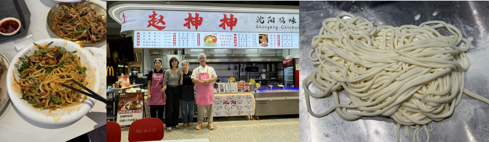

back to home
拉面 Lamian
Cambridge, MA
Apprentice under Shenyang based 赵师傅 (Master Zhao) in Shenzhen, China
Method

Lamian noodle strands exponentially increase with every pull, resulting in 128 strands of even thickness (ensure even firm but gentle pressure) in 7 pulls.
Twisting (Kneading Method)
Pulling
Full Process